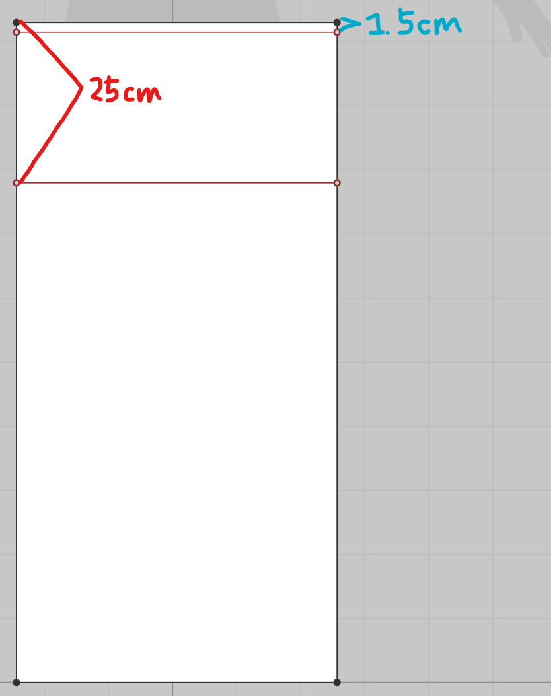
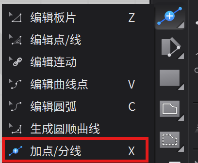

CLO3D / BOOK 03
CLO 界面的平裁打板：裤子制作
从厘米单位与模特准备开始，在 2D 工作台逐步建立裤装板片。

CLO3D / TROUSERSBEFORE YOU START
先把单位设为厘米
本课以厘米（cm）为教学单位。你可以自行换算，也可以在 CLO 中统一切换：顶部菜单「设置」→「用户自定义」→「用户界面」→「单位」，将「所有单位」改为「厘米」。

01
准备打板工作区
增加模特并调整窗口
- 从顶部「文件」→「增加」→「虚拟模特」，选择扩展名为 .avt 的模特文件并打开。
- 这次主要练习 2D 平裁打板，因此可以拖动 3D 与 2D 窗口之间的分隔线，把 2D 工作台拉宽，方便观察和操作。
02
建立裤装基础尺寸
创建矩形并标记裆深
- 按 S 使用矩形工具，建立宽 50 cm、高 103 cm 的板片。可双击工作台，在尺寸窗口中精确输入。
- 使用「编辑板片」工具选中矩形上边线，右键选择「内部线间距」，从腰线向下偏移 1.5 cm，为腰部弧度预留空间。
- 再次选中最上面的边线，用同一方法向下偏移 25 cm，标记裆底深度。确认两条参考线的位置，如右侧示意图。
03
继续建立水平参考线
标记臀围下方与裤脚位置
- 沿用刚才的「编辑板片」和「内部线间距」方法。从臀围线（裆底线）向下偏移 8–10 cm，再增加一条水平参考线。
- 再选中矩形底边，向上偏移 3–6 cm，标记裤脚上方的参考线。两处尺寸可以在范围内按自己的裤型调整。
04
在臀围线上精确加点
用 X 标记前裤片宽度
- 按 X 切换到「加点/分线」工具，在第二根水平线（臀围线）上点击并按鼠标右键，打开「分割线」尺寸窗口。
- 将「线段2」设为 24 cm，确认后该点便标出前裤片的宽度。示例矩形总宽为 50 cm，因此另一侧「线段1」显示 26 cm；注意点位所在的左右方向。

05
从臀围线向下画
建立前裆宽参考点
- 按 G 使用「内部多边形/线」，以刚才标记的点为位置，从腰线画到裆底线，形成一条纵向参考线。
- 使用 X「加点/分线」，在该点右侧的臀围线段上右键打开尺寸窗口，距中心线 6 cm 处加点，标记前裆宽。
06
用宽度计算中心位置
计算前裤片中心线
- 用「编辑板片」选择后裤片方向的 26 cm 线段，按住 Shift 再选择刚才 6 cm 的前裆宽线段。两段长度相加后除以 2，就是前裤腿中心线的位置。
- 本例为 (26 + 6) ÷ 2 = 16 cm。按 X 在臀围线左侧线段右键，输入 16 cm 加点，作为前裤腿中心位置；方向以图示为准。
07
将中心引到脚口
标记第一侧 9.5 cm 脚口宽
- 按 G 从臀围线上的前裤腿中心点向下画线，对齐至脚口线，也就是矩形底边上方的那条参考线。
- 用「编辑板片」确认脚口线段，再用 X「加点/分线」在脚口线上右键，输入 9.5 cm，加点标记中心线一侧的前脚口宽。
08
另一侧使用同样宽度
对齐加点并完成脚口标记
- 另一侧先用「编辑板片」框选相关的点和线，右键选择「对齐、增加点」→「到内部线」，让脚口线在中心参考线处形成可编辑的分割点。
- 再按 X 在另一侧脚口线段右键，输入 9.5 cm 加点。这样前裤脚中心线两侧各有 9.5 cm，参照最后的尺寸图检查点位。
09
为裤脚翻折预留长度
从脚口点向上画 6 cm 垂直线
- 使用「编辑板片」工具选中刚才在脚口两侧标出的 9.5 cm 点。右键选择「生成垂直内部线段」→「选择线段」。
- 在弹出的窗口将角度保持 90°、长度设为 6 cm，勾选「反方向」，使线段向上延伸。两侧的点都照此操作，为之后制作裤脚翻折预留参考线。
10
连接已标出的关键点
绘制前裤腿轮廓线
- 按 G 使用「内部多边形/线」，将臀围线上的关键点与对应的脚口点连接，再把前裆点与脚口相应位置相连。
- 沿着视频确认两条线的对应关系和走向，先完成前裤腿的基础轮廓，之后再调整曲线细节。
先保存 CLO 工程文件。后续裤装步骤会继续接在这里。
← 返回 CLO3D 书架